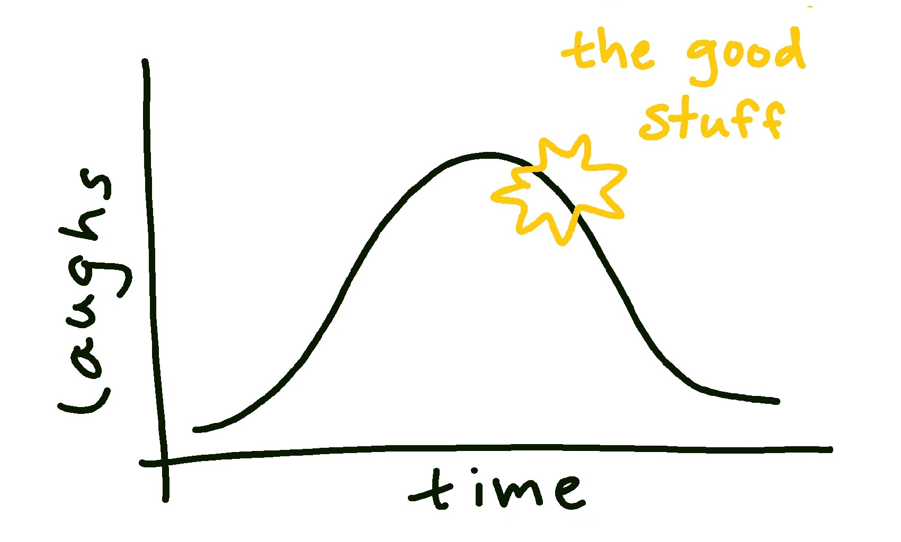

If you’re reading this, you probably know that I travel to the US almost every other week to visit clients. I bring along my favourite product, a board full of sensors that’s great for teaching engineering students how internal measurement units, infrareds, hygrometers, and even radars work (there’s more, but this isn’t a sales pitch. Unless you’re interested…). This is a lovely system. But because the probability of running a demo smoothly sometimes feels like flipping a coin, things just don’t always work. So what would a person untrained in the art of improvisation do when the highly-built-up demonstration comes to a screeching halt due to, let’s say, a mandatory PC update?
Some babbling, probably. There’d be some awkward chuckles amid a lot of silence. Maybe some worn out bluescreen jokes. All that build-up, all the credibility that this person’s just established is fading quick. But if they knew how to think on their feet and how to keep momentum when the script’s torn to shreds, their audience will feel nothing more than a slight bump at their PC’s restart on the road to learning what they came here to.
It’s easy to see this and think oh no. But that’d be breaking the first rule of improv: the yes-and. Somewhat of a meme now, it ensures that two actors are never riffing their partners into a hole they cannot improvise out of.
Yes, my PC is restarting, and I need to continue with the demo. Yes, I know my products, and I can show them xyz in the meantime. Whether it’s painting a picture of how the clients can use the product in the classroom or putting the thing in their hands to demonstrate build quality, creativity and adaptability will save you from disaster. The yes-and is an improvisationist’s greatest tool.
When I was cast in the University of Toronto’s sketch comedy musical show, I was introduced to a fantastic concept called the laugh curve. Keep in mind, this was an engineering show made by engineers, so we all ate up the idea of explaining showbiz through graphs. But the concept is pretty intuitive: it explains that a joke lands best when you wait for the audience’s peak laughter and engagement to begin to wane before you continue with the next. It has to be timed perfectly, however, so that the audience’s excitement doesn’t get too low and you need to work very hard to get them to the peak again. The moment they’re coming over the peak of the curve, you nail them with the next joke, and they’re right back up again. I’ve illustrated this in the graph below:

Riding the laugh curve
Humans love connecting with others, and it feels magical when it’s done with such effortless finesse. So while everyone can feel when a presentation is landing with an audience, it might not be clear exactly why. I’m an engineer, and I like having that knowledge. Would I have been able to identify this magic, understand its usefulness, and apply it to public speaking if I didn’t learn it before experiencing it onstage? Probably not. But now it’s more than an abstract feeling. It’s a tool for me to gauge the tone of an audience, and an indicator for when I should move on from that last topic.
The importance of practicing improv isn’t only for reading an audience, or to keep them engaged while you put out your inevitable fires. It’s not even limited to the stage.
A developer could be writing code for hours at a time in front of a computer speaking only to a rubber duck. But they’re almost certainly not the only two members on their team. Engineers are stronger when working together, sharing ideas, and assisting each other through the bugs. Teamwork is critical. Imagine a group of improvisers riffing on a scene; the jokes are landing, the audience is climbing the laugh curve, then one actor says the dreaded no. They’ve stalled their teammates and left them scrambling to find a new angle to the bit (whatever an improviser says onstage is automatically considered true. Curveballs can topple a whole scene through story contradictions). No one wants to be in this position, so teammates don’t put them there.
And, unfortunately, sometimes a project flops. It doesn’t matter how much time or effort was put into completing it; it didn’t work, and the engineers are left with a post-mortem and a next-project-shaped hole to fill. It’s frustrating, and sometimes difficult to not take personally. What’s a great way to build the resiliency needed to tackle the next project? Improv, of course.
I have been on stage and flopped so hard I might as well have been scooped onto dry land from a pond. Pity laughs are actually worse than silence, FYI. But a sprinkling of embarrassment grows humility, and with humility comes resilience. Projects fail, demos crash, and deliverables slip into the abyss. But because it’s been practiced, the path of least resistance becomes ownership of the problem and action toward the next steps.
So how can an engineer (customer-facing or not) best develop the non-numerical critical skills needed to be the best at their jobs? Flex imaginative problem solving on the fly, with pressure from a live audience. Understand the needs of the audience by their place on the laugh curve. Build teamwork and empathy through yes-ands. Grow resilience through humility when they just cannot think of the next joke to make, and laugh about it backstage after the show.
Improv is fun. That’s reason enough to do it. But it’s also an underutilized tool for developing “soft” engineering skills. A great engineer is a versatile one, and that’s why all of us should hop up on stage once in a while. Maybe someone in the audience will suggest a bluescreen skit. We’ll know what to do.